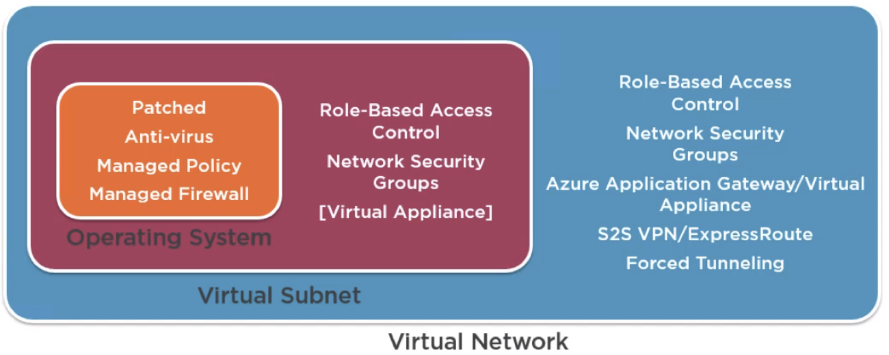

Azure Security¶
Cyber Security is important aspect to digital transformation. To use Azure well, the understanding of the security building blocks is crucial.
https://docs.microsoft.com/en-us/azure/security/azure-security-getting-started
Contents
Security Basics¶
Every company has some level of security requirement that stretches across almost every element of the business. It’s important to think of security in layers rather than a single protection element.
Defense in Depth: The best security is based on layers of protection and this is especially true with networking. See following picture.
It’s also important to ensure security while not crippling the business ability to operate. Make security a core step of any new project, of change control, of anything you do.
Key Security Areas¶
Identity and access |
Being sure you are who you say you are |
Network security |
Secure access, isolation, and publishing |
Data protection |
Encryption of data at rest and in transit |
Protecting secrets |
Keys, certificates, credentials |
System integrity |
Patched, protected, etc |
Insight |
Auditing, system state, health |
Security terminology¶
Asset |
People, property, or information (database, software code, company records) |
Threat |
Person or process that can exploit a vulnerability (intentionally or accidentally) to obtain, damager, or destroy an asset |
Vulnerability |
Weakness or gap in a security program that can be exploited by threats to gain unauthorized access to an asset |
Risk |
The potential for loss, damage, or destruction of an asset as a result of a threat exploiting a vulnerability |
Azure security services overview¶
Identity and Access¶
Azure Role Based Access Control
Azure Active Directory /B2C/B2B
Azure Multi-Factor Authentication
Hybrid identity with Microsoft Azure: Microsoft’s identity solutions span on-premises and cloud-based capabilities, creating a single user identity for authentication and authorization to all resources, regardless of location.
Network Security¶
Network Security Groups: While Virtual Network (VNET) is the cornerstone of Azure networking model and provides isolation and protection. Network Security Group (NSG) is the main tool you need to use to enforce and control network traffic rules at the networking level. Customers can control access by permitting or denying communication between the workloads within a virtual network, from systems on customer’s networks via cross-premises connectivity, or direct Internet communication.
Azure VPN Gateway: A VPN gateway is a specific type of virtual network gateway that is used to send encrypted traffic between an Azure virtual network and an on-premises location over the public Internet.
Azure Application Gateway: Azure Application Gateway is a web traffic load balancer that enables you to manage traffic to your web applications.
Azure Load Balancer: With Azure Load Balancer, you can scale your applications and create high availability for your services.
Azure Traffic Manager: Azure Traffic Manager is a DNS-based traffic load balancer that enables you to distribute traffic optimally to services across global Azure regions, while providing high availability and responsiveness.
Azure Application Proxy: Azure Active Directory’s Application Proxy provides secure remote access to on-premises web applications. After a single sign-on to Azure AD, users can access both cloud and on-premises applications through an external URL or an internal application portal.
Route Control and Forced Tunneling: Forced tunneling lets you redirect or “force” all Internet-bound traffic back to your on-premises location via a Site-to-Site VPN tunnel for inspection and auditing.
Virtual Network Security Appliances: Use your favorite network virtual appliances in Azure
Azure Virtual Network: Your private network in the cloud
Express Route: Experience a faster, private connection to Azure
Internal DNS & Azure DNS
Data Protection¶
Azure Storage Security
Azure Storage Service Encryption (for data at rest)
StorSimple Encrypted Hybrid Storage (an integrated storage solution that manages storage tasks between on-premises devices and Azure cloud storage.)
Azure Client-Side Encryption
Azure Storage Shared Access Signatures
Azure Storage Account Keys
Azure File Shares with SMB 3.0 Encryption: The Server Message Block (SMB) protocol is a network file sharing protocol that allows applications on a computer to read and write to files and to request services from server programs in a computer network. The SMB protocol can be used on top of its TCP/IP protocol or other network protocols. Using the SMB protocol, an application (or the user of an application) can access files or other resources at a remote server. This allows applications to read, create, and update files on the remote server. It can also communicate with any server program that is set up to receive an SMB client request.
Azure Storage Analytics
Role-based access control (RBAC)
Encryption in Transit
Enabling Browser-based clients using CORS

Do not copy production db, but use SQL DB Data Masking
Backup and Disaster Recovery
Azure Backup
Azure Site Recovery
Azure Database Security
Azure SQL Firewall
Azure SQL Authentication
Azure SQL Transparent Data Encryption: Transparent Data Encryption (TDE) encrypts SQL Server, Azure SQL Database, and Azure SQL Data Warehouse data files, known as encrypting data at rest.
Azure SQL Database Auditing
Protecting secrets¶
Azure Key Vault
System integrity¶
Applications
Web Application vulnerability scanning
Penetration testing
Web Application firewall (WAF)
Layered Security Architecture
Web server diagnostics and application diagnostics
Antimalware & Antivirus
Hardware Security Module
Virtual machine backup
VM Disk Encryption (IaaS VM disk)
Patch updates
Security policy management and reporting
Authentication Options¶
Authentication in the Public cloud¶
Communication over the public cloud has to be focused on protocols commonly available. HPPTS is preferred and often required because it is encrypted with SSL.
Authentication commonly used:
OAuth
OAuth 2 (used by Azure AD)
SAML
Azure Active Directory¶
Provide access to web-based services
Identity infrastructure of the future
Expanding constantly
Limited but growing features
Limited control over user environment
Active Directory Domain services¶
Access to on-premises resources
Current and past identity infrastructure
Been pretty constant for over a decade
Full featured implementation
Infrastructure is built and maintained
Fine-grain control of user environment
Applications within the configured virtual network can leverage Azure AD in a similar way to AD DS (LDAP, join domain, Kerberos, NTLM)
Useful where AD DS needed but don’t want the management or cost of traditional AD DS
Custom domain name¶
To simplify the full name of azure AD url
Verify through your own hosting website (e.g. hostmonster)
Azure AD Connect¶
Azure AD Connect tool is to connect the local AD to Azure AD.
And you can activate or deactivate the sync between Azure AD and local AD.
Azure AD Connect !== AD Federation
Privileged Identity management: Azure AD P2¶
No standing privileges is a common security goal. Ideally accounts have privileges elevated only when required.
Azure AD Privileged Identity Management (PIM) enables users/groups to have roles assigned. The user must then request elevation, typically also with MFA along with an optional comment. The elevation is for a configurable amount of time per role.
A big focus is for a single identity across all systems and clouds. It is critical that the identity is as secure and monitored as possible.
Azure AD Identity Protection provides a centralized view of risk events, risk users and vulnerabilities. Can be utilized as part of conditional access to add user risk level as a condition.
Typical Capabilities
Browser Based Authentication
Mobile Device Authentication
Multi-Factor Authentication
Login to your corporate directory
Single Sign On (to SaaS apps)
Social Login
Identity as a service¶
How else does IDaaS help?
DDOS prevention at the provider, not at your app
User Management
Block suspicious login
Prompt for MFA
Protocol based protection at the app (OpenlD Connect / OAuth2)
Centralized user management
Audit logs, reports
Compliance
Azure Key Vault¶
An Azure resource provider backed by pools of hardware security modules (HSMs)
Provides storage:
Secrets - Pieces of data (under 25KB) that can be stored and retrieved
Keys - Stored and then used within the key vault to perform cryptographic operations (but cannot be retrieved)
Certificates - Management of x509 certificates including lifecycle
Authentication and Authorization¶
Authentication is via Azure AD OAuth2 tokens.
Authorization is via Access Control List (ACL) on the key vault.
Typical structure is as follows: Key Vault Owner; Key/Secret Owner; App Operator; Auditor
Store your private keys, shared secrets, other connections, securely
FIPS (Federal Information Processing Standard) compliant option HSM storage ($$)
Examples: Private keys, certs, passwords; Connection strings; Secrets and account names for service bus, storage, search, redis, etc.
Networking¶
Connecting Virtual Networks
If Virtual networks exist in the same region and use the same Azure AD tenant network peering can be used to connect them using the Azure backbone network
Another option is to utilize site-to-site VPN or ExpressRoute where network peering is not possible
Site-to-site VPN or ExpressRoute are used to connect to on-premises locations
NSG Rules: Rules are based on 5-tuple and have priority and action (allow or deny)
Source IP address (can be a range using CIDR format)
Source port
Destination IP address (can be a range using CIDR format)
Destination port
Protocol (TCP, UDP, or * )
Non-VNet Azure Services
Most non-laaS services do not directly integrate with VNets
The services have an Internet public facing endpoint
Some services provide a configurable firewall to control access based on public IP address and if from an Azure service
When enabling for Azure services it means any service for any tenant running in Azure
If more granularity required, look to utilize a public IP from the source service and restrict based on that IP
Virtual Appliances
A large number of virtual appliances are available in the Azure Marketplace
Licensing can be based on: Bring your own license or Hourly billing
Essentially a VM with pre-configured software and configuration to perform a certain set of functionality
Common examples include firewalls and load balancers
Azure Application Gateway
A layer 7 reverse-proxy solution
Terminates the client connection and forwards requests to target
Application protocols support HTTP, HTTPS and WebSockets
Supports SSL termination (offloading the CPU from the endpoints)
Internet facing and Internal (VNet) applications
Provides a layer of abstraction from the requesting client and the back-end service
Web Application Firewall
Optional addition to Azure Applicaiton Gateway
Provides a web application firewall solution
Implements CRS 3.0 by default (2.2.9 also available) (Core Rule Set)
Rules can be disabled on an individual basis if required
Detection or prevention mode
Some practices
Logically segment subnets: use nsgs for inter-subnet traffic
Control routing: used with virtual network applicances
Enable forced trunneling: constrain outbound VM traffic
Disable RDP/SSH: employ P2S or S2S VPNs
Enable Azure Security Center: Prevent, detect, and respond to threats
Other Services and practices¶
Azure Security Center¶
AAA: authentication, authorization, accounting
SIEM (Security information and event management)
Recommend actions to take to secure your VMS
Define policies
Export logs for analysis
Integration with Operations Management System (OMS)
Azure Trust center¶
Compliance Requirements
Infrastructure: ISO 27001, 0 SAS 70 Type Il, SSAE 16
Audit: Third party review/ NIST SP 800-53; Third party pen test OWASP or OSSTMM; Third party NESSUS scan
You can see the certificates http://azure.microsoft.com/en-us/support/trust-center/compliance/
Virtual Machines¶
Disabling unused services on VM i.e., no guest accounts, services run with least privilege
Keep machines patched, up to date
Updating out of date software
Azure Security Center can help here
Password / User Account Policies¶
Initial password issuance
Password strength
Password reuse
Frequency of change
Admin password special requirements
Hash algorithms / key lengths
Inactivity, login failure, account blocking
Non-obvious account names
Delivery of account/password materials
De-provisioning / access revocation
No sharing of accounts
Database Access Requirements¶
Limited to individuals: Application / system accounts; Few admin / read only
All access to data is controlled via applications
Never, never, never log in to the database and fix issues directly with content/data: At least this is the goal; Build tools to solve data problems instead, track repeat offenders
Resource and Role¶
Azure resource manager
every object is a resource
every resource belongs to a single resource group
resource groups are not a resource access boundary
Resource Groups
resources in a resource group should share a common lifecycle
Resource groups can be heterogeneous or homogeneous
Resource groups are not a boundary of access
Role-based access control
With ARM the access to resources and the actions possible can be finely controlled
A major use for resource group is with RBAC by grouping resources together in a resource group then delegate authority to groups of users on the resource group
RBAC and also apply to entire subscriptions or an individual resource
Enables assignment of roles at various levels: The subscription; A resource group; An individual resource
Assigned rights are inherited by child objects
Combine with Azure AD groups which contain users
Assign Azure AD groups to a role at the desired level
Built-in roles
large number of in-box roles
not every role applies to infrastructure
when looking at a resource only its relevant roles will be displayed
classic resource have smaller set of available roles and only at subscription level
select a role and a resource provider to see detailed permissions of the role
Written by Binwei@Singapore